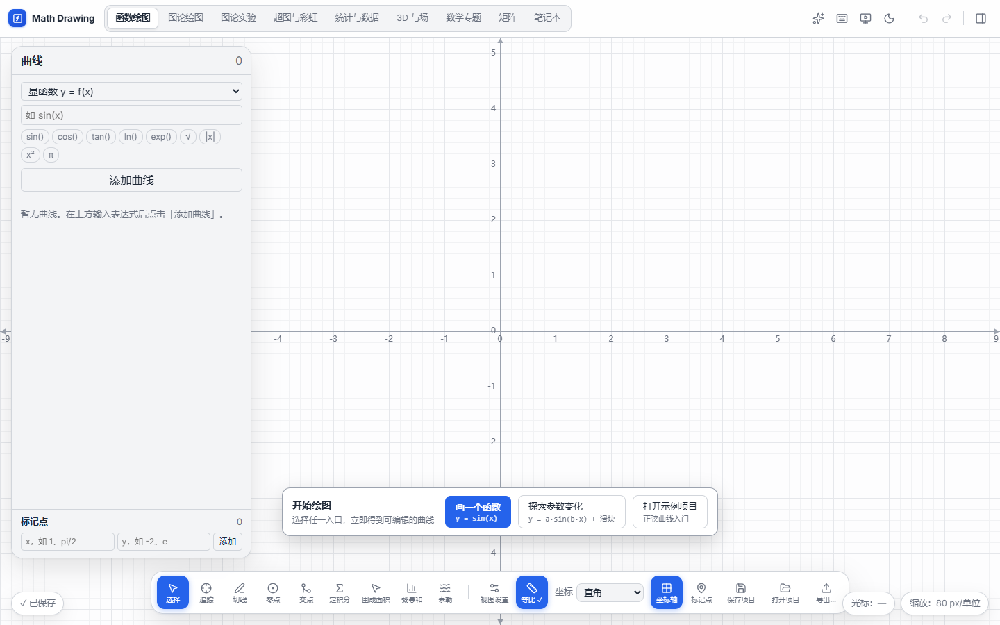
函数绘图：画布优先，但浮层过多
视觉克制表达式快捷输入左栏留白过大
- 三个浮层同时压在画布上：左侧曲线卡、底部工具 dock、底部开始绘图卡。
- 左侧“曲线”输入区与底部“标记点”之间出现大片空白，信息密度失衡。
- 底部 13 个工具全部常驻，图标为主、文字很小，初学者难以扫读；画布有效面积被压缩。
- 右上角全局图标没有文字标签，功能发现性弱。
先看成熟数学工具和图分析工作台的设计取舍，再选择适合 Math Drawing 的整体壳。当前需求不是“换配色”，而是让 9 个工作区、画布和计算面板形成稳定的信息层级。
现有界面已经有清晰的浅色视觉体系、浮层和深色画布；问题主要是“功能都露在外面”，画布被多个浮层同时切割，高级功能在垂直方向上无限堆叠。

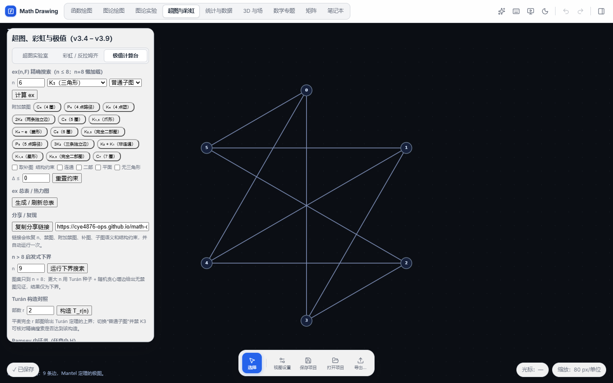
下面 4 个参考覆盖两类产品：数学绘图工具（Desmos、GeoGebra）和图/关系分析工作台（Gephi Lite、Quiver）。截图仅用于内部设计对标，来源见页面底部。
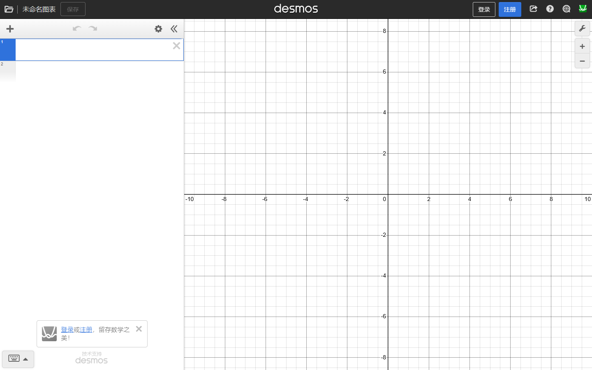
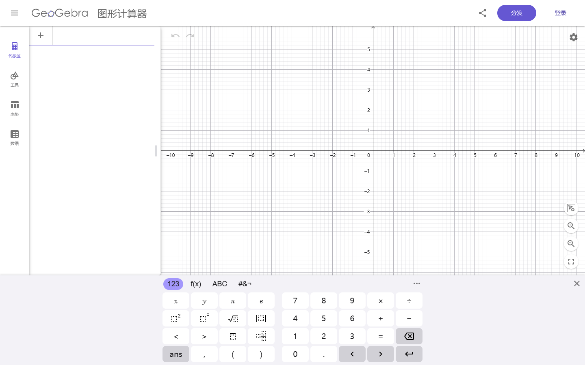
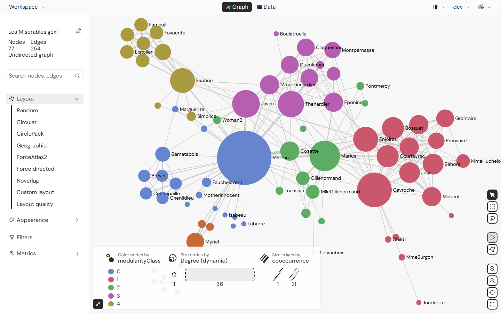
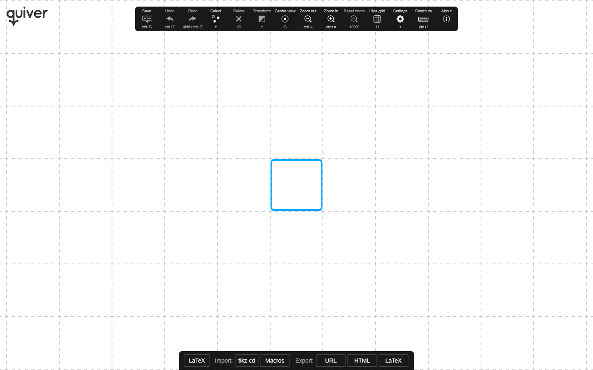
不是三套配色，而是三种信息架构。选择一套作为主壳，其他两套可以作为“课堂演示模式”或局部交互吸收。
全局壳已按 B 方案落地，并用同一套结构覆盖全部 9 个工作区。左侧工作区轨负责切换，编辑栏固定在工作流侧，画布保持独立，右侧检查器集中工具、视图与项目操作；原先覆盖画布的底部工具坞已移除。窄屏改为横向工作区轨 + 上半屏画布 + 下方编辑栏/检查器滚动。
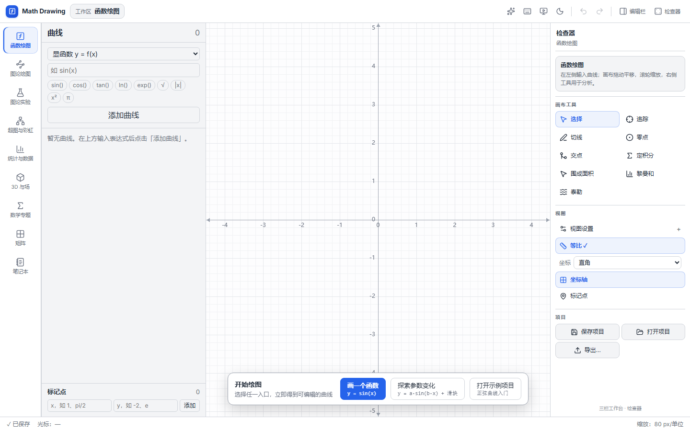
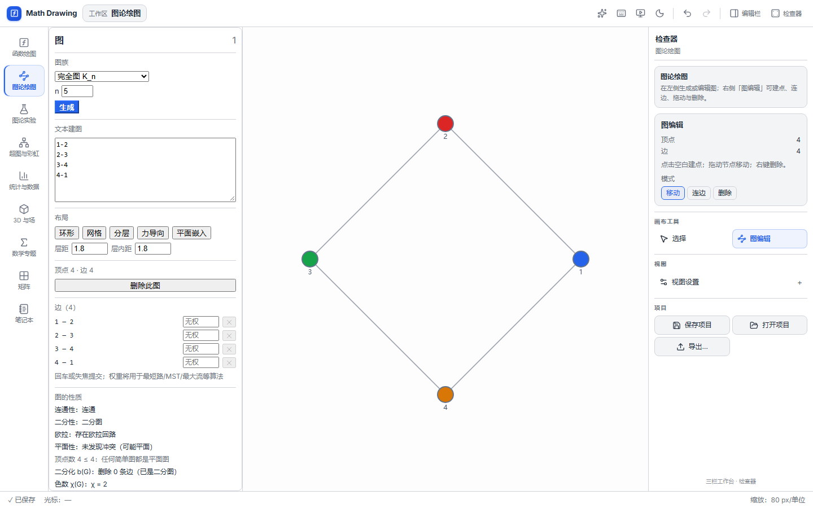
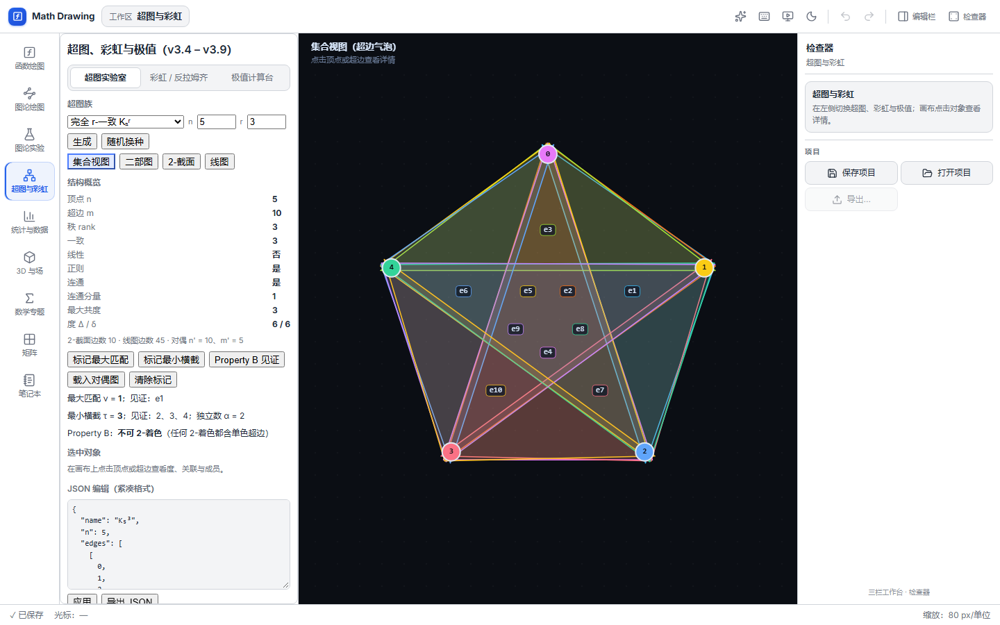
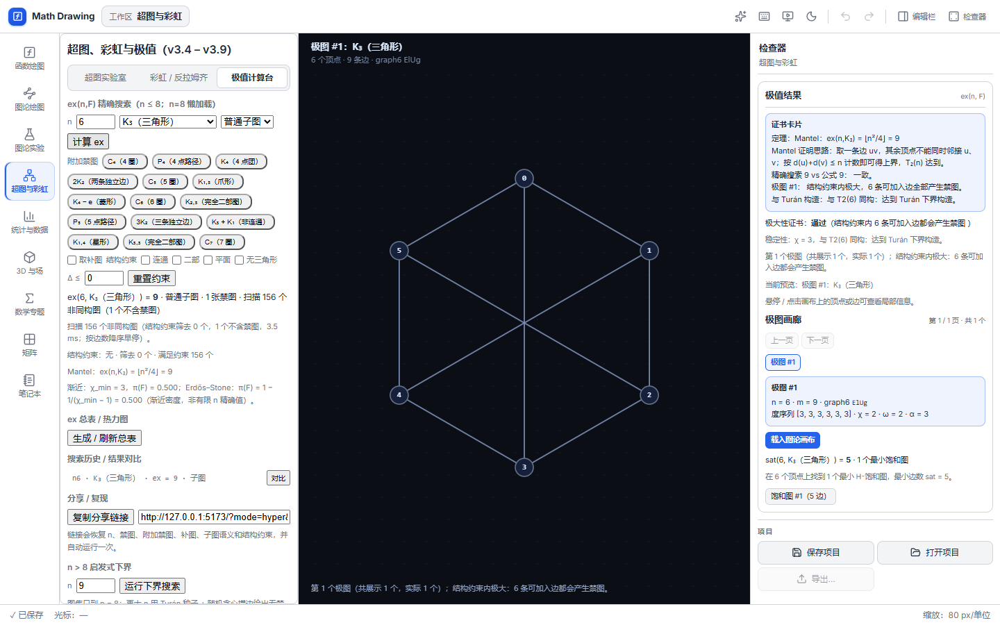
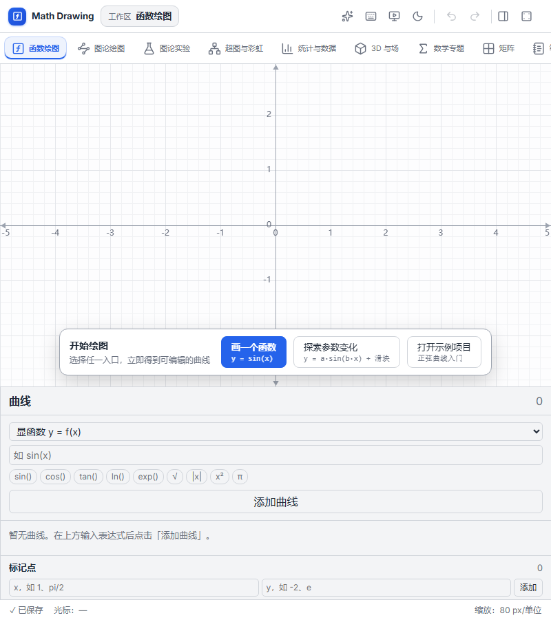